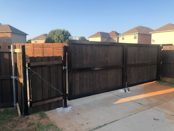

Perimeter Fencing
Clean, durable fence lines for homes, shops, commercial properties, and larger lots.
Fence Contractor Denton TX
Leatherneck Welding builds strong, clean fence systems for Denton homeowners, acreage properties, shops, and businesses needing dependable fencing built for North Texas conditions.

Denton has a mix of residential neighborhoods, larger lots, commercial properties, and nearby acreage. That means fencing needs to balance curb appeal, security, durability, and everyday function.
Whether you need a clean perimeter fence, a custom driveway gate, pipe fencing, privacy fencing, or fence repairs, Leatherneck Welding builds fence systems with long-term strength in mind.
We serve Denton, Sanger, Aubrey, Pilot Point, Valley View, Gainesville, and surrounding North Texas communities.
We regularly review projects outside these areas.Clean, durable fence lines for homes, shops, commercial properties, and larger lots.
Heavy-duty pipe fencing for entrances, acreage properties, and long-lasting boundary lines.
Driveway gates, entry gates, and access gates built to match the property and fence design.
Privacy and security-focused fencing for residential properties and backyard spaces.
Repairs for damaged posts, sagging gates, broken sections, and worn-out fence lines.
Gate reinforcements, braces, repairs, and upgrades to improve existing fence systems.
We focus on fence systems that look clean, hold up, and make sense for the property. From residential perimeter fencing to heavier welded fence work, our goal is durable, practical craftsmanship.
Project photos will be added here as Denton-area fence projects are completed.


Yes. Leatherneck Welding provides fence installation, custom gates, pipe fencing, perimeter fencing, and fence repair in and around Denton.
Yes. We build custom driveway gates, access gates, ranch gates, and gate upgrades designed to match your fence line.
Yes. We can help with privacy and perimeter fencing depending on the property layout and project needs.
Yes. We serve surrounding North Texas communities and regularly review projects outside the listed service areas.
Send us your project details, photos, or rough layout and we’ll help you get started.